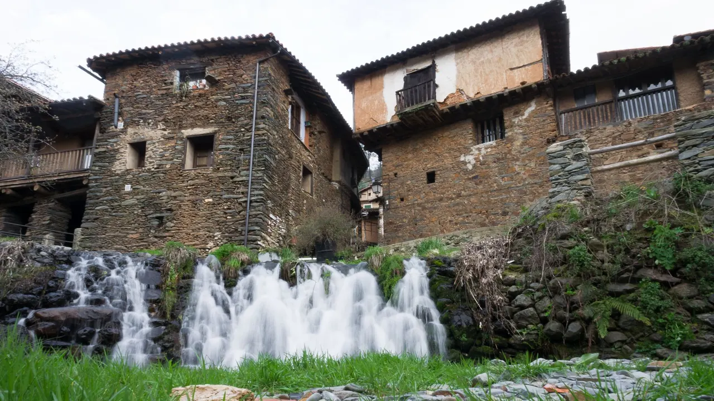
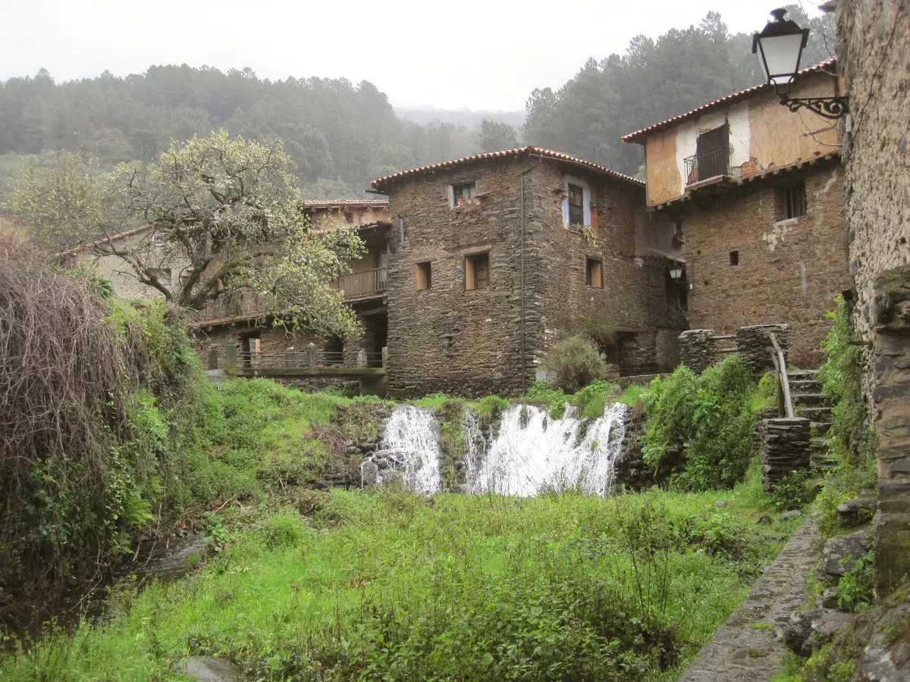
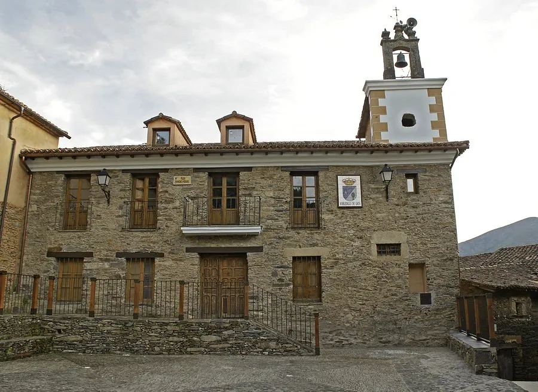
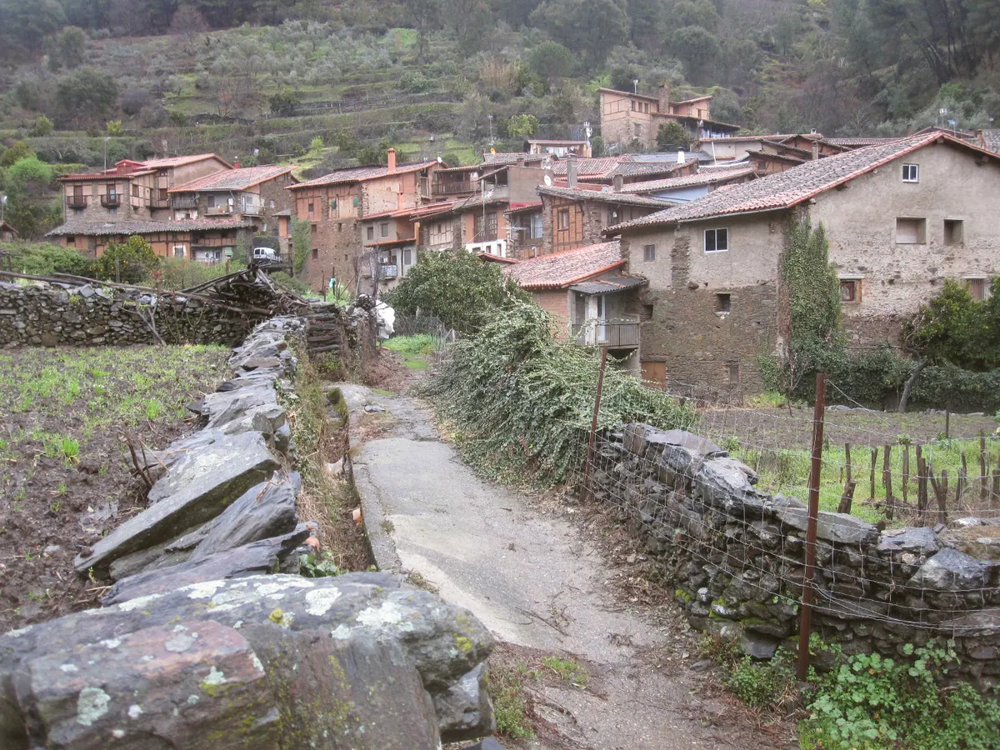
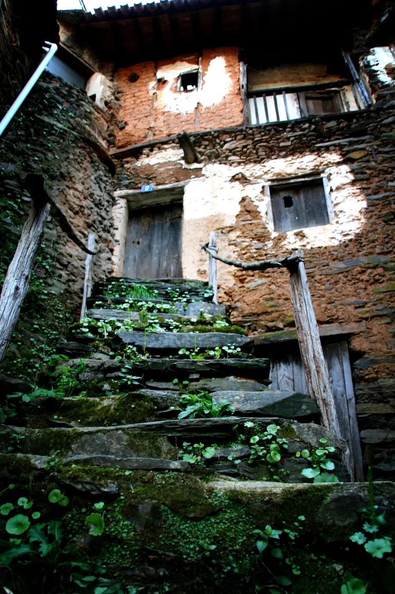
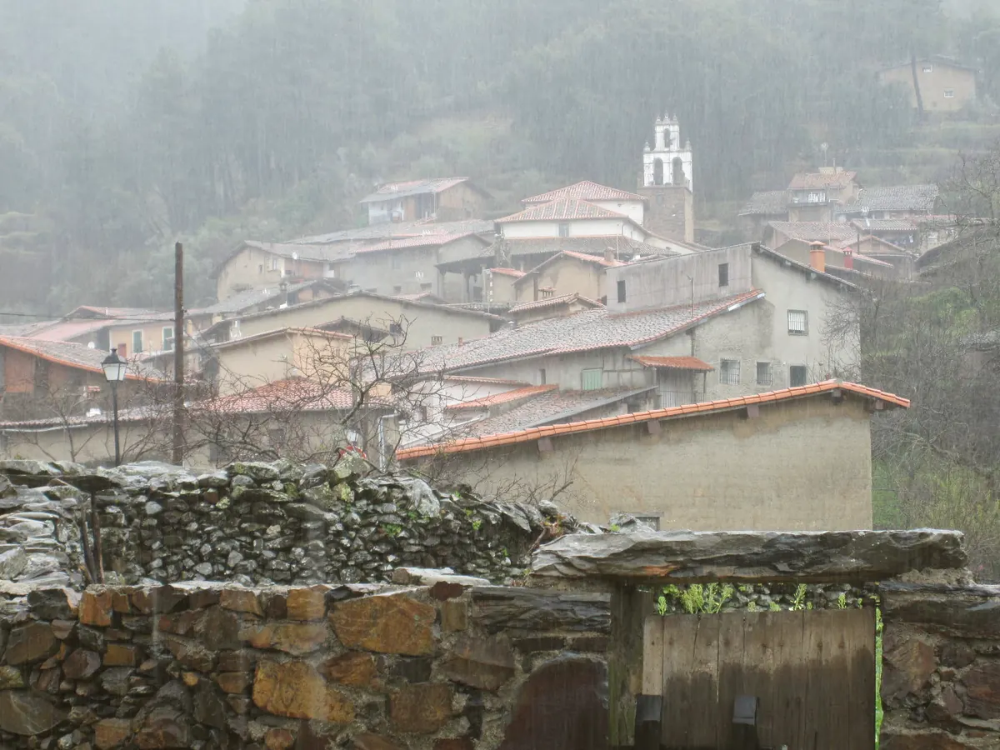
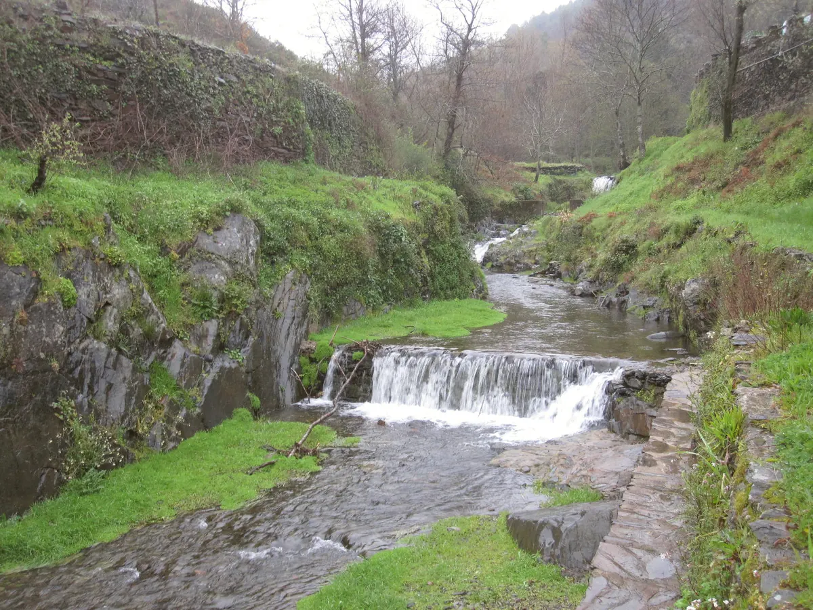

Pluma, presa y secreto
Ibérico a la brasa, al punto. Lo primero que recomiendan quienes repiten.

Asador · Robledillo de Gata · Sierra de Gata
Carne ibérica a la brasa, tablas de la sierra y flan de castañas, en un mesón de familia con el valle del Árrago delante del comedor.
Dónde comer en Robledillo de Gata
Producto de la sierra y raciones para compartir. Cocina casera de siempre.
Especialidades
Ibérico a la brasa, al punto. Lo primero que recomiendan quienes repiten.
Quesos, embutido ibérico y jamón para el centro de la mesa mientras sale la carne.
Chuletón de ternera para dos o tres, entrecot, solomillo y chuletitas de cordero.
El postre de Robledillo, con las castañas de los castañares que rodean el pueblo.



Cocina tradicional extremeña. Algunos platos cambian con la temporada.
El mesón
Un mesón de familia en una de las entradas del pueblo. Entras por el bar, tomas el vino y la tapa, y para comer te acompañan al salón de la planta de arriba, con el pueblo y la montaña delante.
Salón pequeño en la planta alta. Para grupos, reserva con unos días de margen.
Para el vino de antes o el picoteo de la noche cuando hace bueno.
Robledillo está en la sierra y en noviembre huele a castañas asadas. Aquí se come caliente.
Tronas para los pequeños. Si quieres llevarte la comida, llama y encárgala.
Puedes pagar con tarjeta, Bizum o efectivo.

Robledillo de Gata
Robledillo tiene unos 90 vecinos, es Conjunto Histórico desde 1994 y está en la red de los Pueblos Más Bonitos de España. Casas de pizarra y madera con el río Árrago pasando por debajo. Se recorre en una mañana y da hambre.

Pasadizos de madera, balcones con flores y el Molino del Medio, un molino de aceite rehabilitado con visita guiada y cata. La iglesia de la Asunción, del siglo XVI, está en el centro.
Estamos en una de las entradas del pueblo. Reserva para el comedor y ven con ganas de carne; luego, el flan de castañas.

En verano, la piscina natural en lo alto del casco urbano. El resto del año, el sendero de Santo Tomé entre bosque, o el Chorro de la Ovejuela, una cascada de unos 70 metros a pocos minutos en coche.
Opiniones
Las valoraciones son públicas y se pueden leer en su fuente. No publicamos reseñas copiadas ni testimonios propios.
561 reseñas · nota media
Leer las opiniones en Google en Tripadvisor 4,7 / 571 opiniones · n.º 1 de 4 restaurantes del pueblo
Leer las opiniones en TripadvisorLo que más se repite en las opiniones:
Datos consultados el 20 de octubre de 2026; pueden variar.
Reservas
El comedor es pequeño y los fines de semana se llena. No hay reserva online: te atendemos por teléfono o WhatsApp.
Teléfono
Se abre WhatsApp con un mensaje preparado: fecha, hora, personas y comedor o terraza. Es una consulta; la mesa queda reservada cuando te confirmamos.
Otro teléfono: 927 67 11 22
Horario
Abierto todos los días. En temporada baja puede variar: si vienes de lejos, llama antes.
Grupos
Para más de ocho personas, llama con unos días de antelación. El comedor es pequeño y conviene organizar las mesas.
Dirección
Calle Barrero, 20
10867 Robledillo de Gata (Cáceres)
Antes de venir
Entre semana se suele poder comer sin reserva. Viernes, sábados, domingos, puentes y en verano el comedor se llena: llama al 654 79 42 93 o escribe por WhatsApp y te guardamos sitio.
Todos los días de 11:00 a 22:00. En temporada baja puede variar; si vienes de lejos, llama antes.
Lo habitual es entre 20 y 30 € por persona compartiendo tabla, carne, postre y vino. Un chuletón para dos sube un poco la cuenta.
La carta gira en torno a la brasa. Hay ensaladas, tabla de quesos, gazpacho en verano y sopa de ajo en invierno. Si tienes alguna alergia o intolerancia, dilo al reservar y te decimos qué se puede adaptar.
Sí. Hay tronas. Si venís en grupo con carritos, avísalo al reservar para prepararos la mesa.
Sí, aceptamos tarjeta, Bizum y efectivo.
El pueblo es de calles estrechas. Deja el coche en los aparcamientos de la entrada del pueblo; el mesón está en una de las entradas, a un paso.
Sí. Llama y encarga; te decimos a qué hora pasar a recogerla.
Cómo llegar
Calle Barrero, 20. Robledillo está en la cabecera del valle del Árrago, en el extremo norte de Sierra de Gata, junto a Las Hurdes.